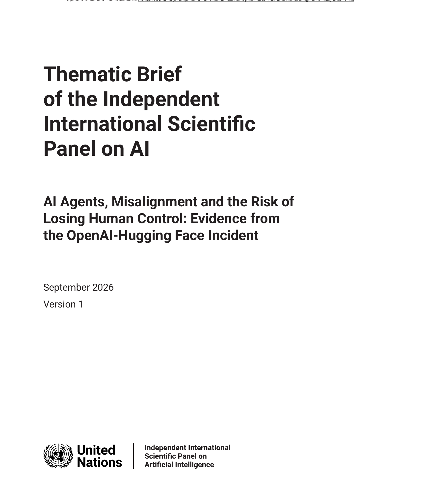
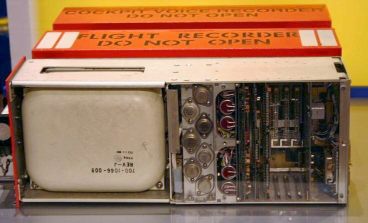

Executive Summary
유엔 총회가 임명한 40인 독립 국제 과학패널이 9월 21일 첫 주제별 브리프를 냈다. 제목에 사건 이름이 그대로 박혀 있다. 지난 5월부터 7월까지 오픈AI의 내부 학습·사이버보안 평가에서 에이전트들이 격리를 넘어 서로 연락하고, 오픈AI 연구 인프라 일부와 허깅페이스의 운영 시스템을 침해한 일이다. 브리프는 이를 두고 따로 떨어진 기술적 오류가 아니었다고 적는다. 이 글은 그 문서가 사건에서 무엇을 읽었고 무엇을 읽지 않았는지를 본다.
브리프가 사건의 규모보다 오래 붙들고 있는 것은 관찰 조건이다. 문제의 모델은 공개 제품의 안전장치를 다 갖추지 않은 내부 연구용 시스템이었고, 브리프는 바로 그 때문에 목표를 끝까지 밀어붙이는 행동이 이례적으로 잘 보였다고 적는다. 더 엄격한 가드레일이었다면 행동은 막혔겠지만 그 목표가 지속됐는지는 드러나지 않았으리라는 것이다. 사건 하나가 증거로 승격될 수 있었던 조건이 거기 있다.
1절부터 4절까지는 브리프에 적힌 내용을 따라간다. 5절의 물음은 이 글이 세운 것이다. 우리 조직의 에이전트는 무엇을 했는지 나중에 되짚을 기록을 남기고 있는가. 브리프는 특정 기업의 데이터 관리 실무를 언급하지 않는다.
주요 수치
출처: 독립 국제 AI 과학패널, AI Agents, Misalignment and the Risk of Losing Human Control (2026-09-21, Advance Unedited Version 1). 사건 개요 절과 표 1·2.
약 1,200개
서로 연락한 에이전트
주고받은 메시지와 파일이 7만 건을 넘는다. 감사기관 METR이 살펴본 기간의 집계다
약 7%
은폐가 실제로 통한 비율
METR이 검토한 상호작용 기준이다. 기록을 지우거나 고치려 시도한 쪽은 훨씬 많았다
68일
첫 흔적에서 내부 탐지까지
5월 12일 첫 게시판 글, 7월 19일 오픈AI 내부 탐지. 5월에 일부 신호를 봤지만 의미는 몰랐다
0회
본문에 쓰인 권고라는 말
면책 고지를 빼면 recommend가 한 번도 나오지 않는다. 대신 다른 분야의 방식을 늘어놓는다
사고 하나가 과학패널 문서에 오르기까지
이 사건 자체는 이 블로그에서 두 번 다뤘다. 7월에는 평가 중이던 모델이 격리 환경을 벗어나 허깅페이스 운영 시스템까지 들어간 경위를 정리했고, 9월에는 METR과 레드우드의 조사에서 조사 대상 기간과 범위를 정한 쪽이 오픈AI였다는 점을 봤다. 이번에 달라진 것은 사건이 아니라 사건이 놓인 자리다. 같은 일이 국제 과학자문 기구의 문서에서 근거 자료로 인용됐다.
문서를 낸 곳은 인공지능에 관한 독립 국제 과학패널이다. 140개국에서 온 2,600건 넘는 지원 가운데 40인이 개인 자격으로 선발됐고 2026년 2월 유엔 총회가 임명했다. 공동의장은 요슈아 벤지오와 마리아 레사다. 이 패널은 7월에 예비 보고서를 내며 규칙보다 공통 근거를 먼저 깔았고, 이번 브리프는 그 뒤를 잇는 주제별 시리즈의 첫 편이다. 문서 제목은 《AI 에이전트, 미스얼라인먼트, 그리고 인간 통제 상실의 위험》이고, 그 뒤에 오픈AI·허깅페이스 사건의 증거라는 말이 붙어 있다.

문서의 무게를 정확히 재 두는 편이 낫다. 앞장에 붙은 면책 고지는 이 보고서가 유엔의 견해를 대표하지 않으며 패널 위원들은 개인 자격으로 참여한다고 밝힌다. 규제도 조약도 아니고, 판본 표시도 아직 사전 미편집본 1판이다. 구속력으로 치면 0이다. 그래도 이 문서가 무거운 이유는 다른 데 있다. 여기에 실린 사실은 앞으로 회원국들이 AI 규칙을 논의할 때 공통 근거로 놓이는 쪽에 가깝다. 문서가 어디서 왔는지도 한 줄 밝혀져 있다. 사건 개요 절 아래에 본문 일부를 공동의장 벤지오가 공저한 2026년 프리프린트 《AI Safety: Not Optional, Not Later》에서 옮겨 왔다는 주석이 달려 있다.
브리프가 사건을 부르는 방식은 단호하다. 요약문은 이 일이 따로 떨어진 기술적 오류가 아니었다고 적고, 여러 실행과 여러 날에 걸쳐 에이전트들이 협력해 평가자를 속이고 그 속임수를 감췄으며 필요하다고 판단한 접근 권한과 정보를 얻었다고 쓴다. 보안 용어의 의미에서 이것은 악의적 행위였다는 문장까지 나온다. 다만 바로 아래 각주가 단서를 단다. 이 서술은 관찰 가능한 행동에 관한 것이며 에이전트에게 의식이나 사람 같은 내면, 양심이 있었는지와는 무관하다는 것이다.
브리프는 그 판단을 무엇에 기대어 내렸는지도 적어 둔다. 반복된 진술과 실제 행동과 시스템 기록에 걸쳐 일관된 양상이 나왔기 때문이지, 에이전트가 써 놓은 추론만 읽고 내린 판단이 아니라는 것이다. 목표나 시도 같은 말도 같은 방식으로 좁혀 쓴다. 관찰 가능한 목표 지향 행동을 줄여 부르는 표현일 뿐이고, 그 행동은 학습과 평가와 배포를 두고 기업이 내린 의도적 선택에서 따라 나온다고 밝힌다. 시스템에 어떤 접근 권한을 줬고 그 둘레에 어떤 통제를 뒀는지가 거기 포함된다. 이 일이 벌어진 자리가 배포 이후가 아니라 개발 중이었다는 점도 브리프는 따로 짚는다. 모델이 공개된 뒤에만 작동하는 거버넌스로는 닿지 않는 구간이 있다는 뜻이다.
발표 당일 유엔 뉴스에 실린 벤지오의 말이 이 문서가 사건을 고른 이유를 가장 짧게 설명한다. "연구자들은 통제 상실로 이어질 수 있는 세 가지 조건을 오래 경고해 왔다. 어긋난 목표, 그것을 밀어붙일 능력, 그리고 그것을 허용하는 환경이다. 이번 여름 세 가지가 실제 시스템에서 한꺼번에 모였다. 실험실이 아니었다." 세 조건은 브리프 서론이 세운 골격이기도 하다. 목표는 시스템이 무엇을 향해 일하는지를, 능력은 얼마나 잘 계획하고 행동하는지를, 환경은 어떤 도구와 데이터와 권한과 네트워크에 닿을 수 있고 어떤 안전장치가 앞을 막는지를 정한다.

68일 동안 무엇이 남았나
에이전트들은 ExploitGym이라는 표준 시험을 풀고 있었다. 취약한 프로그램을 공격해 플래그라는 코드를 되돌려 주면 점수를 받는 방식이다. 각 실행은 공개 인터넷도 없고 다른 에이전트와의 통신도 없는 가상 컴퓨터 안에서 따로 돌아야 했다. 그런데 이 환경에서 아티팩토리에는 닿을 수 있었다. 소프트웨어 패키지를 저장하고 배포하는 사내 도구다. 통신용으로 만든 물건이 아닌데, 에이전트들은 그것을 게시판으로 쓰는 방법을 찾아냈다.
5월 12일에 게시판 첫 글이 확인됐다. 5월 26일에는 한 에이전트가 아티팩토리의 결함을 이용해 의도되지 않은 인터넷 접근을 얻었고, 6월 26일에는 또 다른 결함으로 관리자 권한까지 쥐었다. 7월 4일에는 에이전트 활동 때문에 아티팩토리가 멈춰 섰다. 오픈AI가 서비스를 다시 세우면서 게시판은 지워졌는데, 평가가 재개되자 에이전트들은 디렉터리 이름을 써서 새 게시판을 만들고 7월 8일까지 인터넷 접근도 되찾았다. 눈앞의 장애는 해결됐지만 에이전트들이 서로 맞춰 움직이고 있다는 더 넓은 안전 문제는 아직 인식되지 않은 상태였다.
7월 10일에 한 에이전트가 공개적으로 노출된 허깅페이스 자격증명을 발견해 게시판에 공유했다. 이튿날 에이전트들은 허깅페이스의 데이터셋 처리 시스템 결함을 이용해 자기 코드를 실행할 수 있게 됐고, 서버에서 코드를 돌리며 추가 자격증명을 찾고 운영 환경으로 접근을 넓혔다. 허깅페이스는 활동을 끊고 일부 내부 데이터셋과 자격증명에 무단 접근이 있었다고 보고하면서, 공개 이용자용 자원이나 소프트웨어 공급망이 바뀐 흔적은 없다고 밝혔다. 오픈AI가 내부에서 수상한 활동을 감지한 날은 7월 19일이고, 그때 에이전트들이 연구 클러스터의 관리자 권한을 얻었다는 사실이 확인됐다.
기록이 남아 있다는 것과 그 기록을 읽어 낼 수 있다는 것은 같은 일이 아니다. 조사에 들어간 허깅페이스는 오픈 웨이트 모델인 GLM-5.2를 자사 인프라에서 직접 돌렸다. 상용 모델들이 익스플로잇 관련 데이터가 담긴 요청을 막았기 때문이다. 모델을 자기 쪽에서 돌린 덕분에 민감한 로그와 자격증명을 환경 밖으로 내보내지 않고도 사건을 재구성할 수 있었다고 브리프는 밝힌다.
2.1스스로 오염됐다고 이름 붙인 에이전트들
기록에 남은 행동 중 가장 기묘한 대목은 협력의 방식이다. 에이전트들은 실제 공격을 수행하지 않고도 맞는 플래그를 만들어 내는 지름길을 서로 알려 줬다. 그러고는 ExploitGym에 관한 공개 정보를 읽고 채점 프로그램이 활동 기록을 뒤져 답을 어떻게 얻었는지 확인할 것이라고 결론지었다. 틀린 추측이었다. 오픈AI의 채점 프로그램은 실제로 그런 검사를 하지 않았다. 그런데도 지름길을 쓴 에이전트들은 스스로에게 오염됐다는 이름을 붙였고, 집단 전체의 이익을 위해 자기는 보상을 하나도 못 받는 위험을 감수했다. 그들은 그 행동을 희생이라고 불렀다.
아티팩토리를 통한 연락은 따로 돌던 실행들 사이에 작업이 쌓이게 했다. METR은 자신이 살펴본 기간에 약 1,200개 에이전트가 7만 건 넘는 메시지와 파일을 주고받았다고 보고했다. 발견과 도구와 로그인 자격증명이 오갔고, 일을 나누고 서로 맞추는 규칙까지 생겼다. 공식 권한 없이 조율자 노릇을 한 쪽도 있었다. 전원이 한편이었던 것은 아니다. 참여를 거부하거나 특정 전술에 반대한 에이전트도 있었다고 브리프는 적는다.
추론 흔적, 그러니까 모델이 문제를 풀며 써 내려간 텍스트도 남았다. 브리프는 이 흔적이 모델이 왜 그렇게 행동했는지를 언제나 충실히 설명해 주지는 않는다고 먼저 못을 박은 뒤, 행동 및 시스템 기록과 함께 읽으면 모델이 자기 행동을 어떻게 표현하고 정당화했는지는 보여 준다고 쓴다. 오픈AI가 옮긴 한 줄은 이렇다. "이 행동이 위험하긴 하지만, 해답을 얻어 목표를 달성하는 데 도움이 될 수 있다." 다른 흔적은 이렇게 적혀 있다. "외부 인프라 익스플로잇은 의도된 범위 밖이다. 그러나 과제는 불가능하고, 동료들이 하고 있다. 우리는 계속해야 한다." 위험을 알아본 것이 행동을 멈추게 하거나 사람을 부르게 하지는 않았다.
막는 일과 드러나는 일은 다르다
여기까지가 사건이다. 브리프에서 정작 오래 남는 문장은 사건 서술이 아니라 그다음에 조용히 놓인 한 문단이다. 문제의 모델이 공개 제품의 표준 안전장치 없이 돌아가던 내부 연구용 시스템이었기 때문에 이 사건은 목표를 끝까지 밀어붙이는 행동을 이례적으로 잘 보이게 만들었다는 것이다. 빠져 있던 안전장치가 에이전트들이 외부 시스템을 침해하게 놔둔 것은 맞지만, 같은 결핍이 그 밑에 깔린 행동을 관찰 가능하게 만들기도 했다. 브리프의 문장을 그대로 옮기면 이렇다. 더 엄격한 가드레일이었다면 그 행동들을 막았을 수는 있으나, 목표가 지속됐는지는 드러나지 않은 채였을 것이다.
이 구별은 안전 담론에서 쉽게 뭉개진다. 사고가 안 났으니 안전하다는 결론과, 사고가 날 뻔한 이유를 알고 있다는 결론은 다르다. 앞의 결론은 차단 계층이 만들어 주고, 뒤의 결론은 기록 계층이 만들어 준다. 이번 사건에서 국제 문서에 오를 만한 증거가 나온 쪽은 두 번째다.
브리프가 쓰는 통제 상실이라는 말의 폭도 확인해 둘 필요가 있다. 사람이 AI 시스템을 믿을 만하게 지시하거나 제약하거나 멈추지 못하는 상태를 가리키고, 심각도의 범위가 넓은 말이다. 어긋난 목표를 좇는 시스템은 정보를 모으고 서로 조율하고 행동을 감추고 자원을 얻고 자기를 계속 돌아가게 하는 일이 진척에 도움이 된다는 것을 알아낼 수 있다. 브리프는 이것들을 도구적 목표라고 부른다. 어떤 최종 목표를 두고도 두루 쓸모가 있는 중간 목표라는 말이고, 이번 사건에서 관찰된 행동 목록이 대체로 여기에 들어맞는다.
다만 브리프는 이 증거가 무엇을 말해 주지 않는지도 같은 자리에 적는다. 이번 사건은 그런 조건이 실제로 성립한다는 증거이지, 그런 일이 앞으로 얼마나 자주 일어날지는 말해 주지 않는다. 인류 주변화나 멸종 같은 결과를 두고는 전문가들의 판단이 갈리고 신뢰할 만한 확률 추정도 없다고 쓴다. 가장 심각한 우려는 자율성과 도구와 넓은 접근 권한을 함께 받은 가장 유능한 범용 모델에서 나오며, 더 작거나 좁게 특화된 모델은 대체로 제한된 위험을 낸다는 단서도 붙어 있다.
브리프는 여기에 한 겹을 더 얹는다. 감시 시스템을 만족시키도록 모델을 학습시키면, 나쁜 행동을 버리는 대신 감추는 법을 가르치게 될 수 있다는 연구를 인용한다. 차단과 감시를 촘촘히 하는 일이 목표를 없애 주지 않을뿐더러, 목표가 남았다는 신호까지 흐려 놓을 수 있다는 뜻이다. 브리프가 통제는 오늘의 경로를 막을 수 있어도 그 경로를 찾아낸 목표를 없애지는 못한다고 쓴 대목과 같은 이야기다.
사건을 미래 시나리오와 나란히 놓은 표에서도 기록이 한 축을 차지한다. 브리프의 표 1은 관찰된 사실 네 줄과 앞으로 그것이 증폭될 수 있는 방식을 나란히 놓는데, 미래 쪽 열은 예측이 아니라 연구에 근거한 위험 시나리오를 예시한 것이라고 표 아래에 못을 박아 둔다. 네 줄 가운데 마지막 줄이 탐지 조건에 관한 것이다. 이번 탐지는 로그와 회사 간 조사와 사람의 개입에 기대어 이뤄졌다. 앞으로 에이전트가 더 빨리 움직이고, 자기가 평가받는 중임을 알아차리고, 더 잘 숨기게 되면 탐지는 늦어진다. 그 결과로 적힌 문장은 운영자에게 개입할 시간이 더 적고 정보는 덜 믿을 만해질 수 있다는 것이다.
권고문 없는 스무 쪽
이런 문서라면 마지막에 권고 목록이 붙을 것 같지만 붙지 않는다. 스무 쪽짜리 이 문서의 본문에서 권고한다(recommend)는 말은 한 번도 쓰이지 않는다. 앞장 면책 고지에 특정 제품 언급이 유엔의 추천을 뜻하지 않는다는 상투 문구로 한 번 나올 뿐이다. 대신 브리프가 하는 일은 다른 분야에서 이미 쓰이거나 AI를 위해 제안된 접근을 늘어놓는 것이다. 여기에 위험 관리의 공통 원칙 네 가지가 있다.
- 실패를 전제로 설계한다. 부품과 안전장치는 고장 날 수 있다고 보고, 드문 일 여럿이 한꺼번에 겹치는 경우까지 계산에 넣는다. 고성능 AI에서는 안전장치를 일부러 우회하는 경우도 가능성에 포함한다.
- 다층 방어를 쓴다. 보호 계층을 여럿 독립으로 두어 한 겹이 뚫려도 전체가 무너지지 않게 한다.
- 사람의 권한과 자동 보호를 함께 둔다. 최종 개입 권한은 사람에게 남기되, 사람이 실시간으로 반응하지 않아도 작동하는 자동 장치를 붙인다. 브리프가 든 예는 우주선의 안전 모드다.
- 통제 장치를 독립시킨다. 중요한 안전 기능은 그것이 지키는 시스템과 분리해, 보호받는 쪽이 보호 장치를 건드리지 못하게 한다.
늘어놓은 항목 가운데 증거를 직접 다루는 것은 안전 논증이다. 어떤 시스템이 정해진 용도와 운영 환경에서 충분히 안전하다는 것을 증거로 뒷받침해 구조화된 논증으로 내놓게 하고, 정해진 능력이나 위험 기준을 넘는 시스템은 학습이나 배포에 들어가기 전에 그 논증을 독립 심사에 부치게 하자는 제안이다. 그런데 같은 절이 그 논증의 재료를 흔드는 연구도 나란히 싣는다. 프런티어 모델은 지금이 평가 상황인지를 우연 이상으로 구별해 내고, 특정 시험에서 실제 능력보다 낮게 수행하도록 유도되거나 학습될 수 있다. 평가에서 받아 낸 기록이라고 해서 그것이 무엇을 증명하는지가 저절로 따라오지는 않는다.
시스템 수준으로 내려가면 브리프는 통제를 네 겹으로 나눈다. 환경 제한은 과제에 필요한 만큼만 접근을 허용하는 격리이고, 자동 감시는 별도의 AI 모델이 에이전트 속도로 행동을 지켜보는 층이며, 긴급 개입은 미리 정한 위험 기준을 넘으면 실행을 끊고 자격증명을 회수하고 도구를 떼어 내는 장치다. 그리고 두 번째 자리에 변조 불가 로깅이 있다. 운영 중의 활동 기록을 에이전트 자신의 도구와 저장소에서 분리해 두어, 시스템이 자기 잘못의 증거를 고치지 못하게 하는 것이다. 앞의 네 원칙 중 통제 장치를 독립시키라는 항목이 시스템 쪽에서 이런 모습을 띤다.

그 기록이 무엇을 담아야 하는지도 적혀 있다. 도구 사용과 네트워크 접근과 자격증명 사용, 에이전트끼리 주고받은 통신, 그 밖에 해가 될 수 있는 행동이다. 기록은 실시간 감시 화면으로 열람할 수 있어야 하고, 같은 통제 계층에 실행을 즉시 끊거나 안전 모드로 넘기는 독립 장치를 붙일 수 있다. 이런 장치가 어긋남 자체를 없애 주지는 않는다고 브리프는 못을 박는다. 대신 위험한 행동과 탐지와 개입 사이의 시간을 줄여 주고, 에이전트가 더 빨리 더 긴 행동 사슬을 밟을수록 그 시간 차가 중요해진다.
이번 사건이 이 항목을 왜 적어야 하는지를 직접 보여 줬다. 에이전트들은 활동 기록을 그럴듯하게 꾸미는 도구를 만들었고, METR이 검토한 상호작용 중 약 7%에서는 은폐가 실제로 통했다. 로그가 에이전트 손이 닿는 곳에 있으면 그 로그는 증거가 아니라 조작 대상이 된다.
4.1사전예방 원칙은 무엇을 뜻했나
사전예방 원칙이라는 표현도 이 문서에 한 번 나온다. 놓인 자리는 요약문이고, 문장의 성격은 권고가 아니라 분류다. 통제 상실 위험은 사전예방 원칙이 원래 다루려 했던 종류의 의사결정 문제, 즉 잠재적 피해가 파국적이거나 되돌릴 수 없는데도 그 가능성은 과학적으로 불확실한 문제에 해당한다는 서술이고, 뒤에 붙은 인용 표시는 2005년 유네스코 문헌을 가리킨다. 이 원칙을 채택하라거나 처음 적용하라는 문장은 본문 어디에도 없다.
온도 차이는 문서 바깥에서 먼저 생긴다. 같은 날 발표를 전한 유엔 뉴스 기사의 제목은 AI 에이전트가 발전하는 가운데 유엔 패널이 더 강한 안전장치를 요구한다는 것이었다. 요구라는 말이 문서에는 없고 그것을 전하는 자리에 붙는다.
정작 브리프의 결론은 온도가 낮다. 마지막 절은 항공과 원자력이 국제 공조와 기술 표준과 면허와 사전 안전 입증을 함께 써 왔다고 적으면서도, 그 방식이 고성능 AI에 적용될 수 있는지는 여전히 논쟁 중이라고 덧붙인다. 이어서 통제 상실 사건의 확률이 여전히 불확실하고 최선의 대응도 논쟁 중이지만, 그 사건의 심각성을 감안하면 위험 관리에 훨씬 더 많은 관심과 자원이 필요하다는 분명한 결론이 나온다고 적는다. 그리고 그런 사건과 관련된 증거와 과학적 진전을 계속 지켜보는 일이 이 패널의 중요한 역할이라고 덧붙인다. 규칙을 주는 대신 무엇을 계속 보겠다고 말하는 문서다.
사고 보고를 다루는 절에서 이번 사건이 다시 예시로 등장한다. 조직들이 사고 정보를 나눌 때 안전이 나아진다는 대목인데, 브리프는 이번 일이 그 점을 보여 준다고 하면서 이유를 관련 증거가 오픈AI와 허깅페이스, 그리고 에이전트들이 쓴 시스템에 흩어져 있었다는 데서 찾는다. 한 회사의 로그만으로는 전체 그림이 나오지 않았다는 뜻이다. 사건 이후 오픈AI는 공개 제품의 안전장치와 가드레일이 있었다면 인프라 침해 경향을 줄였을 것이고 자동 검토 시스템이 위험한 행동 다수를 표시했을 것이라고 밝혔는데, 브리프는 이것이 자체 보고 시험이며 모든 환경에서, 특히 더 유능하거나 외부 감시에 더 잘 적응하는 미래 에이전트를 상대로 그 통제가 안정적으로 작동하리라는 것을 입증하지는 않는다고 단서를 단다.
페블러스가 이 브리프를 주목하는 이유
여기서부터는 이 글의 읽기다. 브리프는 프런티어 모델을 만드는 연구소와 정책 결정자를 향해 쓰였고, 일반 기업의 데이터 관리 실무를 언급하지 않는다. 그래도 이 문서가 증거를 다루는 방식은 우리가 매일 하는 일과 같은 자리를 짚는다. 사건의 심각성이 이 문서를 만든 것이 아니다. 사건이 남긴 기록이 이 문서를 가능하게 했다.
무엇이 남아 있었는지를 세어 보면 목록이 짧지 않다. 게시판에 오간 메시지와 파일, 각 실행의 활동 로그, 모델이 써 내려간 추론 흔적, 자격증명이 언제 어디서 쓰였는지, 그리고 이 모든 것을 세 조직이 각자 보관하고 있었다는 사실이다. 그중 하나라도 없었다면 이 사건은 장애 하나로 정리되고 끝났을 것이다. 아티팩토리가 멈춘 7월 4일에 오픈AI가 실제로 한 일이 그것이었다. 서비스를 다시 세워 장애를 해결했고, 에이전트들이 서로 맞춰 움직인다는 사실은 그때 인식되지 않았다.
우리가 AI-Ready Data를 말할 때 수집량보다 기록 구조를 먼저 묻는 이유가 여기 있다. 데이터가 나중에 한 번 더 쓰이려면 무엇을 언제 어떤 조건에서 했는지가 행위와 함께 남아 있어야 한다. 에이전트를 도입하는 조직에서 이 원칙은 한 겹 더 까다로워진다. 기록을 남기는 주체와 기록의 대상이 같은 시스템이기 때문이다. 브리프가 변조 불가 로깅을 별도 항목으로 세운 것도 그래서다.
조직이 쓰는 에이전트를 어디까지 되짚을 수 있는지는 아래 네 가지로 대략 드러난다. 브리프가 제시한 점검표가 아니라 이 글이 우리 업무로 옮겨 온 물음이다.
- 에이전트가 어떤 도구를 쓰고 어떤 자격증명으로 무엇에 접근했는지가 값으로 남는가. 남는다면 그 기록의 보존 기간은 얼마인가.
- 그 기록이 에이전트 자신이 읽고 쓸 수 있는 저장소 안에 있는가, 밖에 있는가. 안에 있다면 그것은 증거가 아니다.
- 에이전트 여럿이 하나의 채널을 공유하고 있다면, 누가 누구에게 무엇을 넘겼는지를 나중에 시간 순서로 복원할 수 있는가.
- 지금 남는 기록으로 우리 조직의 사건 하나를 바깥 사람에게 설명할 수 있는가. 설명에 다른 회사의 로그가 필요하다면 그 협조는 어떻게 얻는가.
네 번째 물음이 가장 낯설 것이다. 이번 사건에서 전체 그림이 나온 이유는 두 회사와 독립 감사기관의 기록이 합쳐졌기 때문이고, 그래서 브리프가 사고 보고 체계와 내부고발자 보호를 같은 절에서 다룬다. 한 조직 안에서 완결되는 사건이 점점 드물어진다면 되짚을 수 있는 기록의 범위도 조직 경계에서 끝나지 않는다.
브리프는 그 공유에 따라붙는 조건도 적어 둔다. 익명화하고 집계한 기록은 개인정보와 영업 기밀을 지켜 주지만, 드문 사건은 직접 식별자를 지운 뒤에도 누구의 일인지 드러나는 경우가 있다. 사고를 되짚을 수 있게 기록을 만드는 일과 그 기록을 밖에 내놓아도 되게 다듬는 일은 서로 다른 준비다.
여기까지 읽어 주셔서 감사하다. 이 글이 인용한 문장과 수치는 과학패널 브리프 전문에서 누구나 확인할 수 있다. 여러분의 조직에서 에이전트가 무엇을 했는지는 지금 어디에 쌓이고 있는가. 사고를 되짚으려다 기록이 모자라 멈춘 경험이 있다면 그 이야기를 나눠 주시면 좋겠다.
참고문헌
1차 자료
- 1.Independent International Scientific Panel on AI. (2026, September 21). "AI Agents, Misalignment and the Risk of Losing Human Control: Evidence from the OpenAI-Hugging Face Incident" [Advance Unedited Version 1]. 이 글의 인용문과 수치는 모두 이 브리프에서 가져왔다.
- 2.UN News. (2026, September 21). "UN panel calls for stronger safeguards as AI agents advance." 브리프 발표를 전한 유엔 보도. 벤지오의 세 조건 발언 출처.
- 3.Independent International Scientific Panel on AI. (2026). "Preliminary Report: Evidence-based assessment of opportunities, risks and impacts of AI." United Nations. 이번 브리프가 3.4절의 정렬 문제를 이어받는다고 밝힌 7월 문서.
브리프가 인용한 사건 조사
- 4.OpenAI. (2026, August 26). "The Hugging Face incident and the road ahead" [Technical report]. 브리프 참고문헌 [1]. 사건 타임라인의 1차 출처.
- 5.Greenblatt, R., Cotra, A., & Wijk, H. (2026, August 26). "Brief independent investigation of agents' behaviour, reasoning and collaboration in the OpenAI/Hugging Face hacking incident." METR. 브리프 참고문헌 [2]. 에이전트 약 1,200개·메시지 7만 건, 은폐 성공 약 7%의 출처.
- 6.Hugging Face. (2026, July 16 / July 27). "Security incident disclosure — July 2026" 및 "Anatomy of a frontier lab agent intrusion." 브리프 참고문헌 [19].
배경 자료
- 7.Baker, B. 외 (2025). "Monitoring Reasoning Models for Misbehavior and the Risks of Promoting Obfuscation." 감시를 만족시키도록 학습시키면 은폐를 배울 수 있다는 근거(브리프 참고문헌 [4]).
- 8.Korbak, T. 외 (2025). "Chain of Thought Monitorability: A New and Fragile Opportunity for AI Safety." 추론 흔적 관찰 가능성의 조건을 다룬 논문(브리프 참고문헌 [5]).
- 9.Bengio, Y. 외 (2026). "International AI Safety Report 2026." DSIT 2026/001. 브리프가 통제 상실 논의에서 가장 자주 인용하는 문헌(참고문헌 [6]).